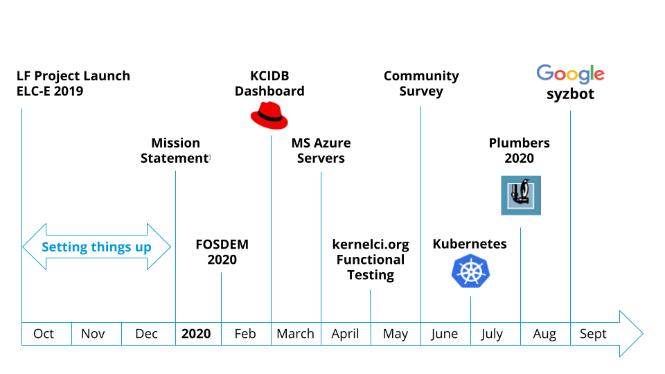

2020 was the first year of the KernelCI project under the Linux Foundation and has been an interesting one. Maybe slightly less “interesting” than the rest of the world-changing events of 2020, but it’s still been an adventure. This article aims to give a quick summary of the major milestones of the first year of KernelCI project, and highlight our goals for the next year.

The founding members spent the end of 2019 doing a formal launch and ramping up the project structure and organization. This led to our mission statement and key goals. Throughout 2020 we gave talks and led discussions at several virtual conferences such as FOSDEM, Open-Source Summit / Embedded Linux Conference (ELC). Check out our blog for more details about the talks and discussions from these events.
Community Collaboration
In the middle of 2020, we did a Community survey to get a sense for what the kernel testing and automation community was looking for. This survey has helped guide where we focus our time and resources. See our blog for an article covering the full results of the survey.
One highlight of the 2020 conference circuit was Linux Plumbers Conference (LPC). At LPC, we gave talks and held focused discussions with our target audience: kernel developers and maintainers. The full details are in a blog article covering the event, but this is where we kicked off public discussions of how to unify test results and reporting from various testing and CI efforts in the community. We’re calling this common datastore for kernel testing results kcidb. Thanks to the discussions kicked off at LPC, we’re now collecting results from several other projects such as Red Hat CKI, Google syzbot, Arm, Gentoo, and the Fuego project. Continued collaboration with these projects as well as other new ones will be a focus area for 2021.
Infrastructure
Another area of growth in 2020 was in our IT infrastructure. As you might expect, we do lots of kernel builds, and that requires lots of compute horsepower. Our build capacity had been capped by a fixed number of donated build machines. But now, thanks to the generous donations of founding members Google and Microsoft, we now have scalable cloud compute resources under Google Compute Platform (GCP) and Microsoft Azure which we manage with Kubernetes so that we can dynamically scale as our compute needs grow.
Kicking off 2021
The governing board kicked off our 2nd year with some project organizational matters such as budgeting and electing this year's executive committee. We are very happy to welcome Guillaume Tucker (Collabora) as the new board chair and Chris Paterson (CIP/Renesas) as the new treasurer. We also say a big thank you to outgoing chair Kevin Hilman (BayLibre) and outgoing treasurer Guy Lunardi (Collabora).
Data
As mentioned above, the collaboration with other testing and CI projects will remain a major focus for 2021. We want it to be easy for anyone doing kernel testing to be able to submit results to our open, centralized datastore: KCIDB. The amount of data we’re collecting is growing rapidly, so we’re also looking for help from “big data” experts to help us build the tooling to visualize and learn from all the data. Please write to us on the mailing list if you have any interest in helping here.
Infrastructure
We’ve been using Jenkins for years to manage our CI pipeline jobs, but as we’ve moved more of our infrastructure into the cloud, we’re looking at ways to migrate our CI infrastructure to a cloud-native framework such as Tekton or Jenkins-X. We’re in the early stages of exploration here, so anyone with experience here that could help guide us, we’d love to hear from you!
Data Visualization & Analysis
We’re also in the early stages of planning new dashboards for visualization and analysis of our growing data set. We’re soliciting feedback from the broader community by collecting user stories to better understand what our users want from new dashboards. In addition to making all the testing data and logs available through advanced visualization tools, we’d also like to enable analytics and deep learning on our growing data set. Once again, this is something we’d love your help on, so if you’re a big data enthusiast and want to put your skills to use to help the Linux kernel, please let us know.
Get involved!
Did you notice any themes above? We’re looking for help! We have some big ideas and plans, but we’re still a very small team and are looking for expertise in a few areas to help guide the future of the project.
Please keep in touch with what we’re up to or to get involved, you can read our blog, follow on twitter @kernelci or join our mailing list.